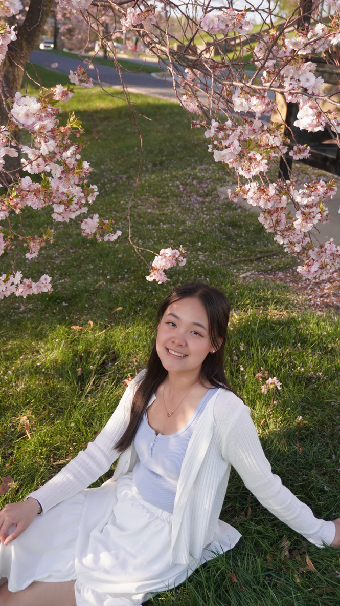
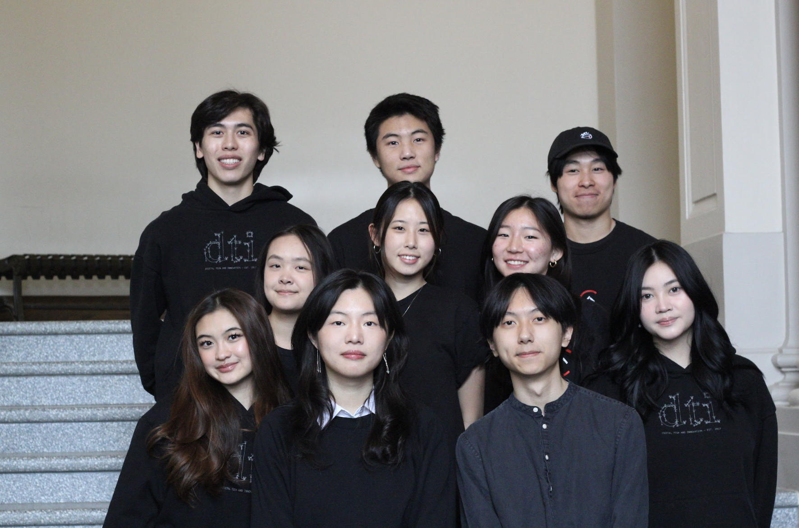
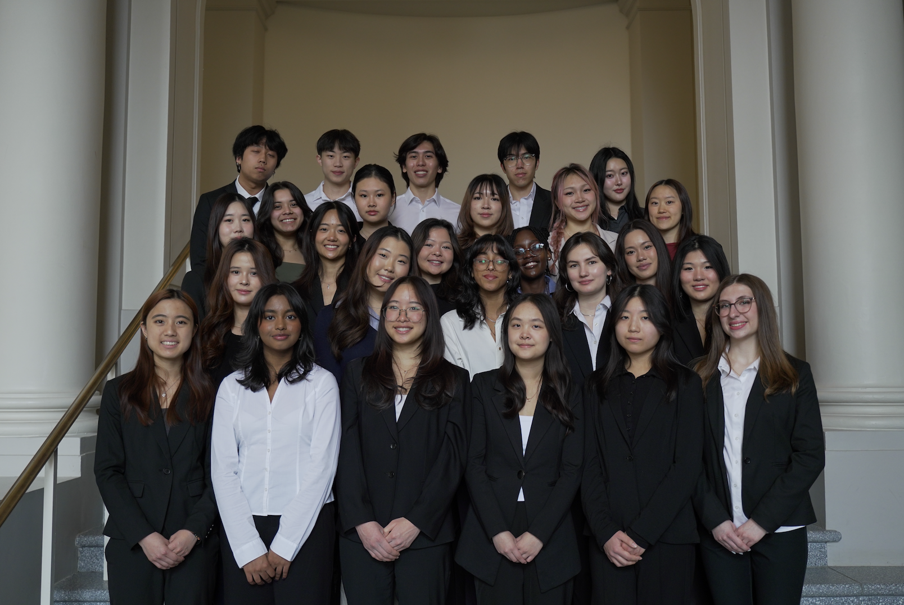
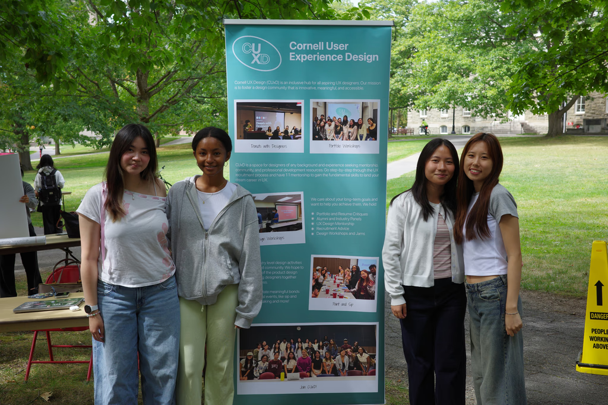
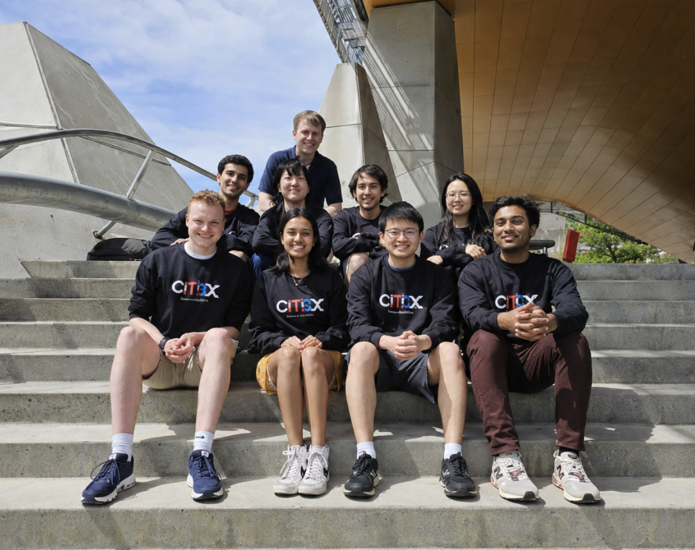
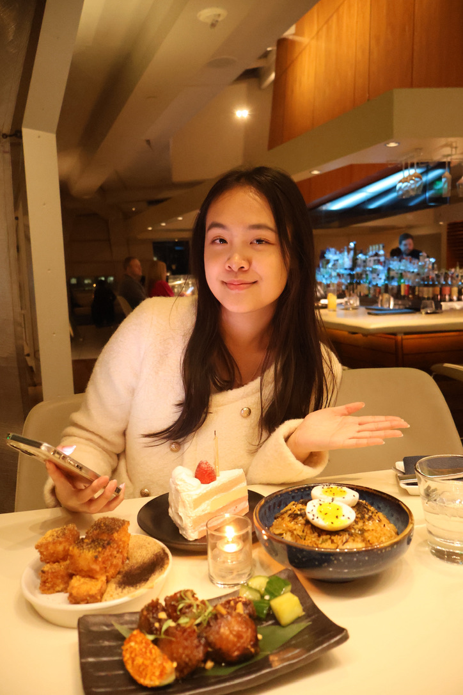
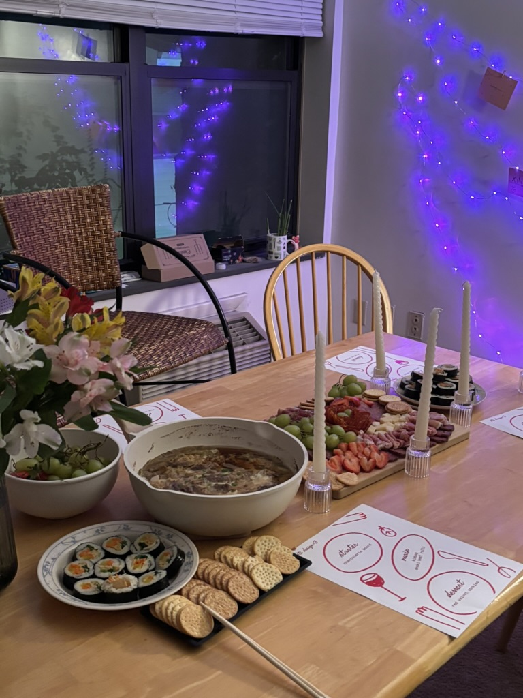
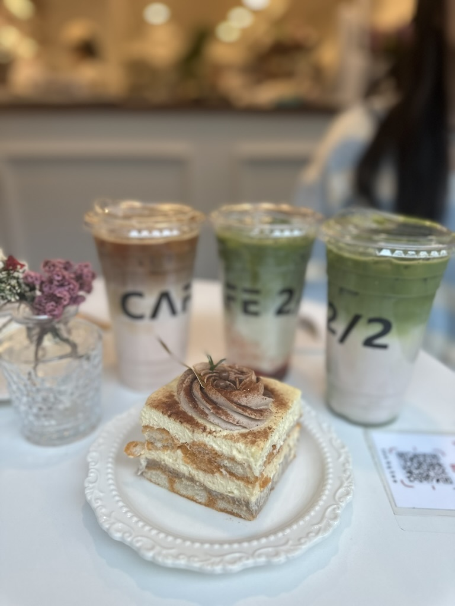
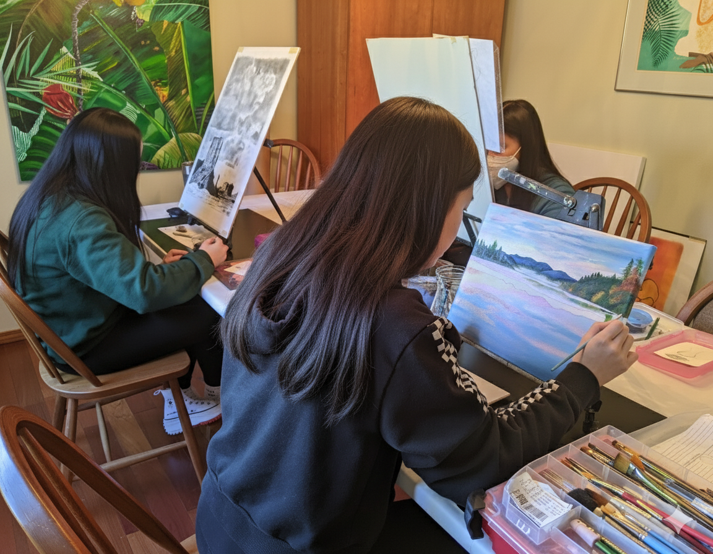

Hi there, I’m Xintong!
A third year student at Cornell University double majoring in Cognitive Science Information Science with concentrations in UX Design and Data Science.
I discovered UX through cognitive science. At first, I wanted to understand how the mind works. Over time, I became more interested in how that understanding could shape real experiences: the tools people use, the choices they make, and the moments that make technology feel clear or confusing.
Product design became the bridge between my curiosity about people and my love for creativity. It lets me turn human insight into experiences that are useful, thoughtful, and accessible. To me, design is about care. It is about noticing small moments, asking better questions, and creating experiences that help people feel understood. That is the kind of work I hope to keep making.
At Cornell, I’m actively involved in the design communities:

Cornell Digital Tech & Innovation
Product Designer
Collaborating with developers, PMs, and marketing to design products for the Cornell community

Design Consulting at Cornell
Design Consultant + NME TA
Designing for real client needs while mentoring new DCC designers in human-centered design

Cornell User Experience Design
Internal Community Lead
Building a supportive Cornell UX community where designers can learn from each other and grow together

Cornell Course Management System
UX Designer
Designing a course management experience that simplifies course data for instructors and TAs at Cornell
Outside of design:
I love exploring hobbies that help me notice details and bring more creativity into my design work

Exploring food places

Cooking food

Cafe Hopping

Painting